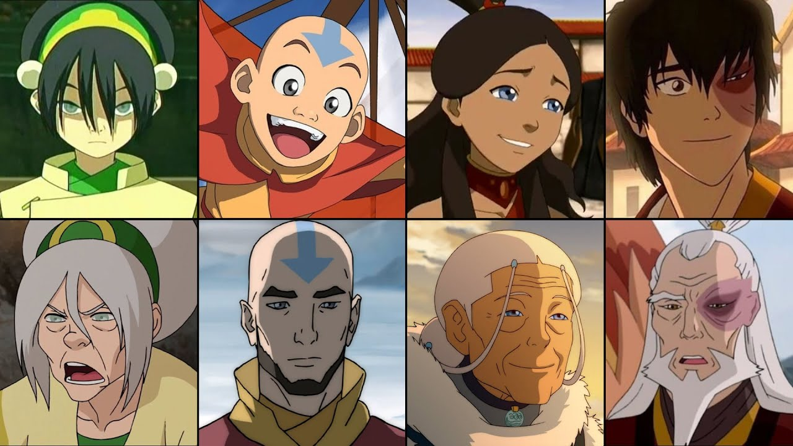

Hi! If you couldn't tell, I'm a huge Avatar fan. I'm here to argue that Korra is not only just as good as the original, but better.
Media

The main characters of Avatar, and how they have look decades later in Korra!
A beautiful audio sample of Leaves from the Vine by Uncle Iroh.
A YouTube video comparing the original with the sequel.